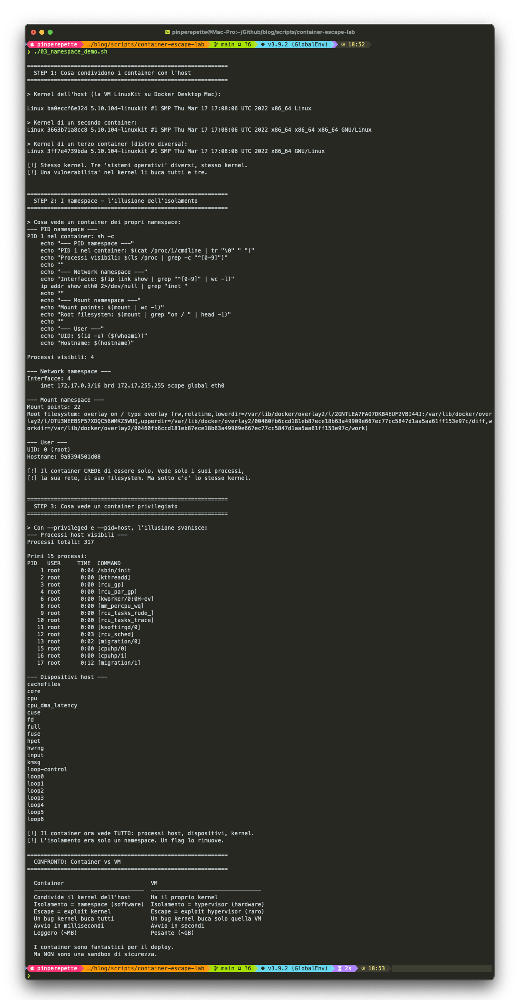
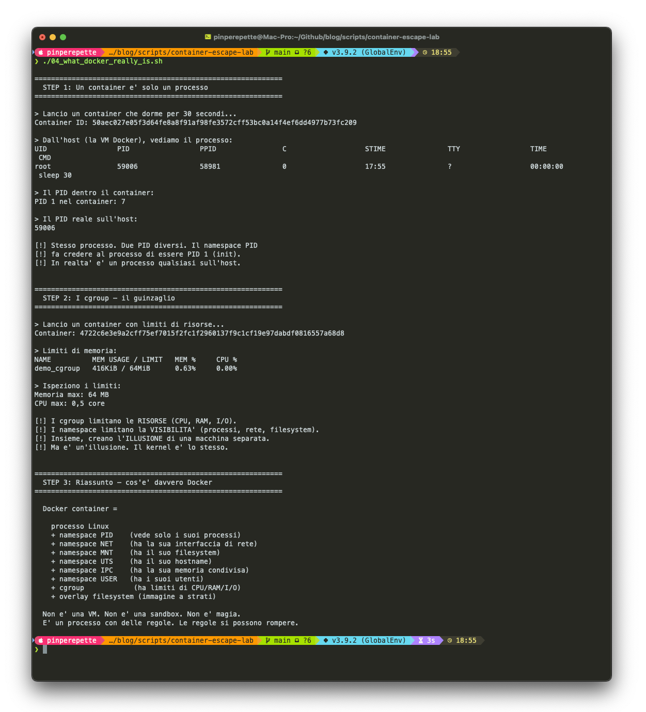
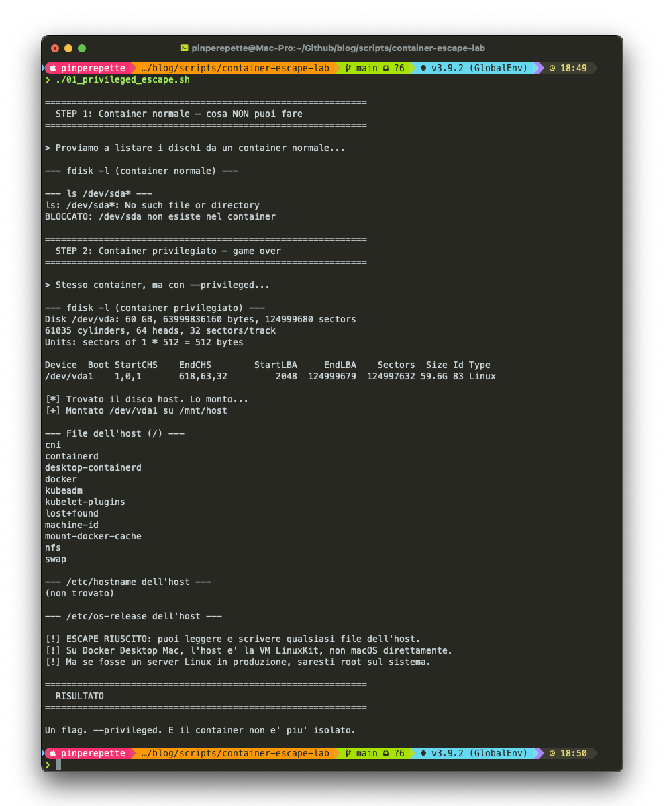
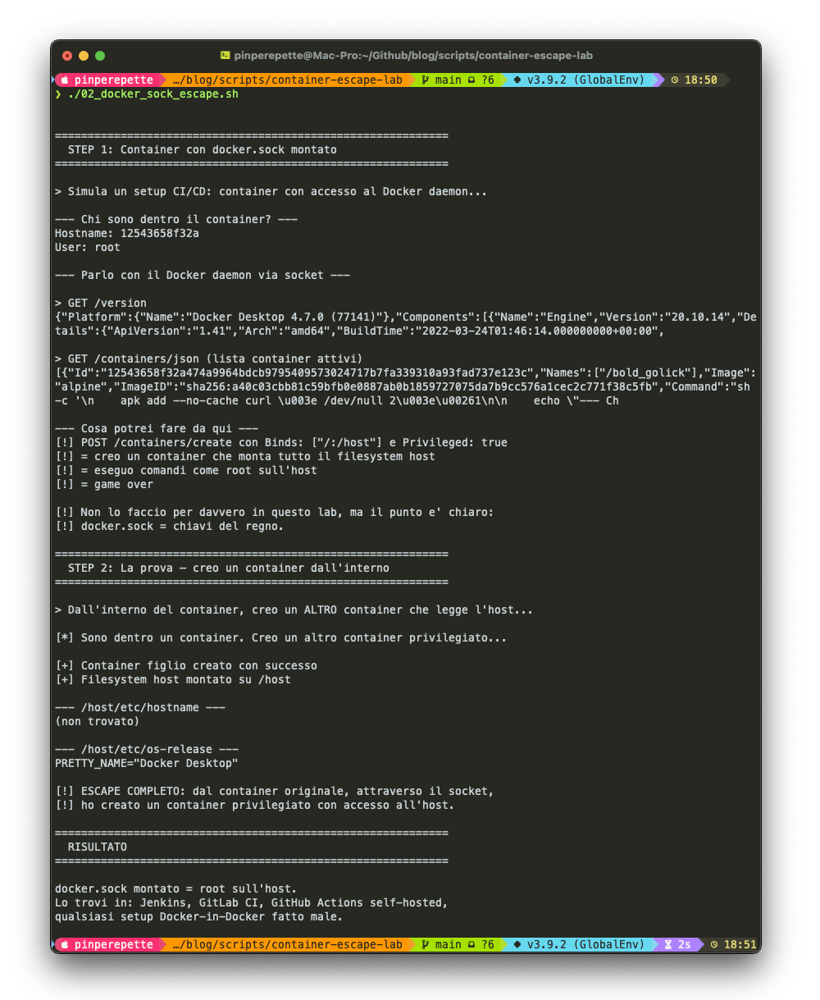
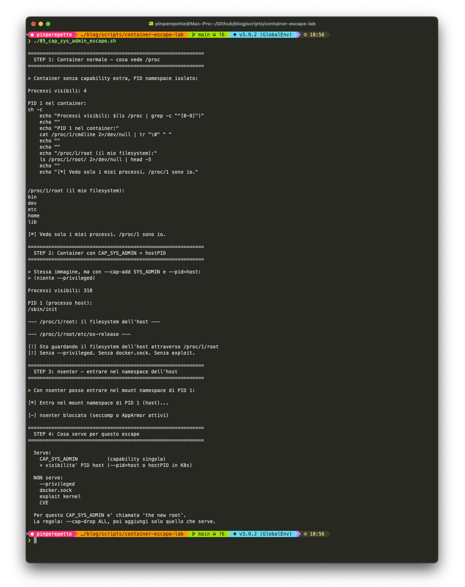

// La Cena
Sezione 00. L'antefattoSabato sera. Ristorante. Siamo in otto, amici e amici di amici. La iena e' di fronte a me, il menu e' arrivato, nessuno l'ha ancora aperto perche' si chiacchiera. Tutto tranquillo finche' qualcuno non menziona che gli hanno bucato il sito dell'azienda.
"Ma come e' possibile? Non era tutto in Docker?" dice uno.
E li' si accende il tipo. L'amico dell'amico. Non lo conosco, me l'hanno presentato mezz'ora fa. "Ah ma si', Docker. Io uso Docker per tutto. E' un sistema blindato, e' come una macchina virtuale. Gira tutto isolato, anche se ti bucano il container non possono fare niente al server."
Annuisco. Bevo un sorso di vino. La iena mi guarda. Sa gia' come finisce.
"Cioe' praticamente e' una sandbox, no?" insiste il tipo. Si e' girato verso di me perche' qualcuno gli ha detto che "faccio cose con i computer". "Una blackbox. Quello che succede dentro resta dentro."
"Mm."
"Ti giuro, da quando uso Docker dormo tranquillo. Metto tutto in container e via."
La iena mi mette una mano sul braccio. Il gesto universale per "no, ti prego, non farlo".
"Scusate un attimo. Vado a prendere una cosa in macchina."
Torno con l'M4 sotto il braccio. La iena chiude gli occhi. Il tipo mi guarda perplesso. Gli altri hanno gia' capito che la serata ha preso una brutta piega.
"Hai il telefono con l'hotspot? Collegami."
// Cos'e' Davvero un Container
Sezione 01. Non e' quello che pensi"Prima di rompere qualcosa, capiamo cosa stiamo rompendo."
"Un container Docker e' una macchina virtuale leggera, no?" dice il tipo.
"No. E' un processo con dei muri intorno. Ma i muri sono software, non hardware."
Silenzio. Gli altri hanno smesso di mangiare.
"Un container e' un processo Linux con namespace isolati, capability ridotte, syscall filtrate, filesystem separato e rete virtualizzata. Non e' un processo 'normale': ha protezioni reali. Ma gira sullo stesso kernel del sistema operativo host. Lo stesso kernel. E il kernel e' la superficie di attacco."
Un container Docker e' fatto di piu' strati di isolamento:
"Aspetta, ma allora una macchina virtuale cos'e'?"
"Una VM ha il suo kernel. Un hypervisor (tipo VirtualBox o HyperKit) emula l'hardware e ogni VM ci gira sopra il suo sistema operativo completo. Il kernel della VM e' separato da quello dell'host. Per uscire da una VM devi trovare un bug nell'hypervisor. Ne escono anche per gli hypervisor: VENOM per QEMU, escape per VMware ESXi, VirtualBox, Xen. Niente e' invulnerabile. Ma la superficie di attacco e' molto piu' piccola rispetto a un kernel Linux intero. Per uscire da un container la superficie e' enorme: kernel, runC, Docker daemon. Oppure basta una misconfiguration."
Condivide il kernel dell'host
Isolamento = namespace + seccomp + capabilities (software)
Escape = exploit kernel, bug runC, o misconfiguration
Un bug kernel buca TUTTI i container
Avvio in millisecondi, peso ~MB
Ha il proprio kernel
Isolamento = hypervisor (hardware)
Escape = exploit hypervisor (meno frequente, superficie ridotta)
Un bug kernel buca solo quella VM
Avvio in secondi, peso ~GB
"Ti faccio vedere." Apro il terminale.
"Vedi? Alpine, Ubuntu, Debian. Tre distribuzioni diverse. Stesso kernel: 5.10.104-linuxkit. Se domani esce una vulnerabilita' in quel kernel, tutti e tre i container sono vulnerabili. Tutti. Contemporaneamente."
Scrollo piu' giu'. Un container normale: 4 processi, la sua interfaccia di rete, 22 mount points. Un mondo a se'. Poi lo stesso container con --privileged --pid=host: 317 processi. /sbin/init, i thread del kernel, lo scheduler, tutto. I device dell'host: loop0, loop1, fuse, hwrng. Il tipo si sporge verso lo schermo.

"Ma aspetta. Come fa un container a essere 'solo un processo'? Ha il suo filesystem, la sua rete..."
Apro un altro script. "Guarda qui. Lancio un sleep 30 in un container. Dentro, il processo crede di essere PID 1, l'init del sistema. In realta' sull'host e' il processo 59006. Stesso processo, due numeri diversi. Il namespace PID gli fa credere di essere solo. Poi guarda i cgroup: questo container ha 64 MB di RAM e mezzo core CPU. Sono i limiti che il kernel gli impone. Un guinzaglio."

Il tipo fissa lo schermo. "Ok, ma in pratica non puoi uscire dal container, no? Cioe', i namespace..."
"I namespace sono barriere del kernel. Ma le barriere del kernel si possono abbassare. A volte basta un flag."
Il punto chiave: un container offre isolamento reale, ma non allo stesso livello di una VM. Kubernetes, AWS, Google Cloud eseguono milioni di container multi-tenant. Se non isolassero nulla, sarebbe impossibile. Ma un container configurato male, o un kernel con una CVE non patchata, puo' trasformare quell'isolamento in un'illusione. La differenza tra "ragionevolmente sicuro" e "bucato" sta nella configurazione e nel patching.
// Misconfiguration 1: --privileged
Sezione 02. Non e' un exploit, e' peggio"Vediamo cosa succede quando lanci un container con --privileged."
"Io non uso mai quel flag," dice il tipo.
"Sei sicuro? Hai mai seguito un tutorial su Stack Overflow che diceva 'se non funziona, aggiungi --privileged'? Hai mai configurato un container che deve accedere a un dispositivo USB, a una GPU, a una porta seriale? Il flag privileged e' la soluzione rapida che tutti usano quando qualcosa non va. E poi resta li'."
Container normale. Provo a vedere i dischi:
Bene. Il container non vede niente. Adesso con --privileged:
"Vedi quel disco? 60 GB. E' il filesystem dell'host. Adesso lo monto."
"Quello e' il filesystem dell'host. Posso leggere qualsiasi file. Posso scrivere qualsiasi file. Posso mettere una backdoor, modificare la configurazione, cancellare tutto. Un flag. Trenta secondi."
Giro lo schermo verso il tipo. In alto il container normale: fdisk -l non da' output, /dev/sda non esiste. Sotto, lo stesso container con --privileged: un disco da 60 GB, /dev/vda1, montato, con tutto il filesystem dell'host visibile. Containerd, docker, kubeadm, swap. Roba che non dovresti mai vedere da dentro un container.

Il tipo non dice niente.
Onesta' intellettuale: questo non e' un exploit. E' una misconfiguration. --privileged e' documentato: disabilita esplicitamente la sicurezza del container. E' come dare chmod 777 / e poi lamentarsi che qualcuno legge i tuoi file. Il punto non e' che Docker e' insicuro. E' che la gente lo configura male senza sapere cosa sta facendo.
"Su Docker Desktop per Mac, l'host e' una VM LinuxKit, non macOS direttamente. Quindi qui stai vedendo la VM. Ma su un server Linux in produzione? Quello e' il vero host. Root access completo."
Perche' --privileged e' cosi' pericoloso? Rimuove tutte le restrizioni: da' al container tutte le capability del kernel (CAP_SYS_ADMIN, CAP_NET_ADMIN, tutte), monta procfs e sysfs in read-write, e rende visibili tutti i device dell'host. Il container diventa indistinguibile da un processo root sull'host.
01_privileged_escape.sh. Container escape via --privileged: fdisk, mount /dev/vda1, lettura filesystem host. Un flag, trenta secondi.
// Misconfiguration 2: docker.sock
Sezione 03. Le chiavi del regno (che gli dai tu)"Ok, non usero' mai piu' --privileged," dice il tipo. "Ma io non lo uso."
"Bene. Hai un CI/CD? Jenkins? GitLab Runner? GitHub Actions self-hosted?"
"GitLab Runner, perche'?"
"Come fa il runner a creare container per i tuoi job?"
"..."
"Monta /var/run/docker.sock dentro il container del runner. Vero?"
Il docker socket e' il file attraverso cui qualsiasi programma parla con il demone Docker. Chi ha accesso a quel file controlla Docker. Puo' creare container, distruggerli, ispezionarli, e soprattutto: puo' creare container privilegiati con il filesystem dell'host montato.
"Guarda." Primo step: da dentro un container con il socket montato, parlo con il demone Docker.
"Vedo il demone Docker. Vedo i container attivi. E adesso: creo un nuovo container privilegiato che monta l'intero filesystem."
"Dal container originale, attraverso il socket, ho creato un secondo container privilegiato con accesso all'host."
Lo schermo parla chiaro. In alto il container che interroga il Docker daemon con curl: versione, lista dei container attivi, tutto esposto. In basso il container figlio che legge PRETTY_NAME="Docker Desktop" dal filesystem host. Due passaggi. Nessun exploit.

"Ma anche questo e' una misconfiguration, no?"
"Si'. E anche questa e' documentata: la stessa Docker dice 'whoever controls docker.sock controls the host'. Ma il punto e' che questa misconfiguration e' ovunque. Il runner CI/CD ha il socket montato per necessita' funzionale. Ma chiunque esegua codice in quel container — un test, una build, una dipendenza malevola da npm. Chiunque puo' parlare con il demone Docker e prendersi tutto. La misconfiguration diventa un vettore di attacco quando il codice che gira nel container non e' tutto tuo."
Script reference: 02_docker_sock_escape.sh. Dimostra entrambi gli step: comunicazione col demone e creazione di container privilegiato dall'interno.
02_docker_sock_escape.sh. Escape via docker.sock: comunicazione con il Docker daemon dall'interno del container, creazione di container privilegiato, accesso al filesystem host. Il pattern classico dei setup CI/CD.
// L'Illusione dei Namespace
Sezione 04. Vedere per credere"Ma allora i namespace non servono a niente?" chiede il tipo.
"Servono eccome. Sono meccanismi reali del kernel: il PID namespace non ti fa solo 'non vedere' gli altri processi, ti impedisce di mandare segnali a processi fuori dal tuo namespace. Il network namespace ti da' uno stack di rete completamente separato. Sono barriere vere, non filtri cosmetici. Il problema e' che dipendono tutte dallo stesso kernel. E il kernel si puo' configurare male, oppure puo' avere bug."
Container normale: vede solo se stesso.
4 processi, il suo IP, il suo hostname. Sembra un mondo a se'. Adesso lo stesso container con --privileged --pid=host:
"297 processi. /sbin/init, PID 1 dell'host. Thread del kernel. Scheduler. Tutto. L'isolamento c'era, e funzionava. Ma bastano due flag per rimuoverlo completamente. Il namespace e' una barriera reale del kernel, non un filtro cosmetico. Ma se dici al kernel 'disattivala', lui la disattiva."
"Ok, ma quei flag non li metti per sbaglio," dice il tipo, un po' sulla difensiva.
"No. Ma li metti quando qualcosa non funziona e Stack Overflow ti dice di metterli. E poi restano li'. Per sempre. Nessuno li toglie piu'."
Il dato che conta: container normale = 4 processi visibili. Container privilegiato = 297 processi visibili. Stessa macchina, stesso kernel. L'unica differenza e' un flag nella riga di comando.
Script reference: 03_namespace_demo.sh confronta la visibilita' di un container normale vs privilegiato, mostra il kernel condiviso tra distribuzioni diverse.
Script reference: 04_what_docker_really_is.sh smonta un container nei suoi componenti: processo con PID reale vs PID nel namespace, cgroup con limiti di risorse, overlay filesystem.
// L'Escape Elegante: CAP_SYS_ADMIN
Sezione 05. Il vero problema non e' --privileged"Ok, ho capito: --privileged e docker.sock sono misconfiguration evidenti. Ma nella pratica, come si esce da un container senza quei flag?"
"Il vero problema non e' --privileged. Quello e' grossolano, si vede da un chilometro. Il problema sono le capability troppo potenti. In particolare una: CAP_SYS_ADMIN."
Nel kernel Linux, CAP_SYS_ADMIN permette operazioni molto potenti: mount, unshare, setns, manipolazione dei namespace, controllo di filesystem virtuali. Per questo molti security engineer la chiamano "the new root". Se un container ha questa capability (direttamente, o tramite configurazioni sbagliate in Kubernetes), puo' fare cose che non ti aspetti.
"Tipo?"
"Tipo entrare nel namespace dell'host passando da /proc."
Ogni processo Linux ha una directory in /proc/<PID>/ con i riferimenti ai suoi namespace:
| 1 | /proc/<PID>/ns/mnt # mount namespace |
| 2 | /proc/<PID>/ns/pid # PID namespace |
| 3 | /proc/<PID>/ns/net # network namespace |
| 4 | /proc/<PID>/root # root filesystem del processo |
Se il container puo' vedere i processi dell'host (ad esempio con hostPID: true in Kubernetes) e ha CAP_SYS_ADMIN, puo' fare setns() su uno di quei file ed entrare nel namespace di quel processo. Se il processo e' dell'host, sei nel namespace dell'host.
"Sei nel mount namespace di PID 1. Il filesystem dell'host. Senza --privileged, senza docker.sock, senza exploit kernel."
C'e' anche una variante piu' semplice. Ogni processo ha /proc/<pid>/root, che e' la root filesystem di quel processo. Se puoi vedere un processo host:
"Stai guardando il filesystem dell'host attraverso /proc. Un chroot e ci sei dentro."
Lo schermo racconta tutta la storia. In alto, il container normale: 4 processi, /proc/1 e' se stesso. Al centro, con --cap-add SYS_ADMIN --pid=host: 318 processi, PID 1 e' /sbin/init dell'host. In fondo, nsenter prova a entrare nel mount namespace dell'host e viene bloccato dal profilo seccomp di Docker Desktop. Su un server in produzione con seccomp disabilitato, quel comando passa.

Il tipo si passa una mano sulla faccia. "E Kubernetes permette queste cose?"
"Non di default. Per questo i Pod Security Standards di Kubernetes bloccano CAP_SYS_ADMIN, hostPID, hostNetwork e hostPath. Ma basta una policy troppo permissiva, un namespace senza restrizioni, un helm chart copiato da internet senza leggere i parametri."
Il punto: la sicurezza dei container dipende molto piu' dalle capability che da Docker stesso. CAP_SYS_ADMIN e' considerata quasi equivalente a root nel kernel Linux. Se il tuo container ce l'ha, l'isolamento e' nominale. Per questo la regola e' sempre --cap-drop ALL e poi aggiungi solo quello che serve.
// Le CVE: Bug Reali, Non Misconfiguration
Sezione 06. Quando non e' colpa tua"Va bene," dice il tipo. "Non uso --privileged, non monto docker.sock, tolgo CAP_SYS_ADMIN. Adesso sono al sicuro?"
"Quasi. Finche' non esce la prossima CVE."
Una CVE (Common Vulnerabilities and Exposures) e' un bug di sicurezza catalogato. I container hanno una storia ricca di CVE che permettono l'escape senza nessun flag speciale:
| CVE | Anno | Cosa | Serve --privileged? |
|---|---|---|---|
| CVE-2022-0492 | 2022 | Cgroup escape via release_agent. Il kernel non verificava i permessi quando un processo scriveva il file release_agent. Escape tramite unshare + mount cgroup | No (basta CAP_SYS_ADMIN) |
| CVE-2022-0847 | 2022 | Dirty Pipe. Permette a un processo non privilegiato di scrivere su file read-only. Se un file dell'host era montato nel container, poteva essere modificato. Non e' automaticamente escape, ma apre la strada | No |
| CVE-2024-21626 | 2024 | Bug in runC. File descriptor leak durante la creazione del container. Escape al filesystem host | No |
| Docker API esposta | ricorrente | Docker Engine API esposta su TCP (porta 2375) senza autenticazione. Configurazione comune in ambienti mal gestiti. Chiunque in rete puo' creare container privilegiati | No |
| CVE-2025-31133 | 2025 | runC: symlink su /dev/null verso file procfs. Il container redirige le bind-mount e ottiene scrittura su file host | No |
"CVE reali, container escape reali. Tutte senza --privileged. Il caso piu' comune in assoluto: Docker Engine API esposta su TCP senza autenticazione. Il container fa una richiesta HTTP a un indirizzo interno e ottiene accesso completo al demone Docker. Nessun socket montato, nessun flag. Una GET."
"Pero' aspetta," dice il tipo. "Anche le VM hanno CVE. VENOM, gli escape di VMware..."
"Giusto. Niente e' invulnerabile, nemmeno gli hypervisor. La differenza non e' che i container hanno bug e le VM no. La differenza e' la superficie di attacco. Il kernel Linux ha decine di milioni di righe di codice e centinaia di syscall esposte al container. Un hypervisor tipo Firecracker ne ha centinaia di migliaia. Meno codice = meno bug = piu' difficile trovare la falla. Ma non impossibile."
Il punto reale: l'esistenza di una CVE non significa che un sistema "non isola". Altrimenti niente isola: ne' Linux, ne' Windows, ne' le VM. La sicurezza e' sempre una combinazione di isolamento, patching e hardening. I container offrono isolamento reale, ma su una superficie di attacco piu' ampia rispetto a un hypervisor e con un margine di errore di configurazione molto piu' alto.
// Docker sul Mac: la Matrioska
Sezione 07. L'architettura che nessuno spiega"Ma allora il mio Mac e' a rischio?" chiede il tipo.
"No, e ti spiego perche'. Ma la ragione e' ironica."
Docker Desktop su Mac non esegue i container direttamente su macOS. Non puo': i container sono una tecnologia Linux (namespace, cgroup). macOS non ha niente di tutto questo. Quindi Docker Desktop fa girare una VM Linux sotto il cofano, una distribuzione minimale chiamata LinuxKit. I container girano dentro quella VM.
"Quando fai l'escape dal container, esci nella VM LinuxKit. Non su macOS. C'e' un hypervisor in mezzo, lo stesso tipo di isolamento hardware delle macchine virtuali. Quello si', e' difficile da bucare."
"Quindi il mio Mac e' protetto dall'hypervisor, non da Docker."
"Esatto. L'ironia e' che Docker sul Mac e' piu' sicuro che su Linux proprio perche' c'e' una VM in mezzo. Su un server Linux i container girano direttamente sull'host. Se esci dal container, sei sull'host. Niente VM, niente hypervisor, niente rete di sicurezza."
"Cioe' in produzione e' peggio che sul mio portatile."
"Molto peggio."
// Il Vero Problema: il Kernel Condiviso
Sezione 08. Dove sta andando l'industria"Quindi il problema non e' Docker in se'. E' il kernel monolitico condiviso."
"Esatto. Docker fa il suo lavoro: namespace, cgroup, seccomp, capabilities. Sono meccanismi reali del kernel Linux e funzionano. Il problema e' che tutti i container condividono lo stesso kernel, e quel kernel ha decine di milioni di righe di codice con centinaia di syscall esposte. Ogni syscall e' un potenziale punto di ingresso."
"Per questo Kubernetes ha introdotto altri livelli di isolamento: Pod Security Standards, profili seccomp di default, rootless container e runtime sandbox come gVisor. L'ecosistema ha gia' reagito al problema. Docker da solo non basta, ma nessuno si aspetta che basti."
"E come si risolve il problema alla radice?"
"L'industria sta andando in una direzione precisa: container + microVM. Il meglio dei due mondi."
"Firecracker e' quello che usa AWS per Lambda e Fargate. Ogni funzione gira in una microVM dedicata che si avvia in 125 millisecondi. Ha l'isolamento hardware di una VM con la velocita' di un container. E' il futuro."
"E perche' non lo usano tutti?"
"Perche' per la maggior parte dei casi d'uso, un container Docker ben configurato e' sufficiente. Non tutti hanno bisogno dell'isolamento multi-tenant di AWS. Ma se esegui codice non fidato (CI/CD, serverless, piattaforme SaaS), allora si', dovresti guardare queste soluzioni."
// Come Proteggersi Per Davvero
Sezione 09. Le regoleLa iena sta parlando con le altre dall'altro lato del tavolo. Ci ha mollato da un pezzo. Gli altri ci guardano come se stessimo parlando in aramaico. Ma il tipo e' agganciato.
"Ok. Cosa devo fare?"
| Regola | Cosa fa | Quanto conta |
|---|---|---|
Mai --privileged |
Impedisce accesso diretto ai device e al filesystem host | Critico |
Mai montare docker.sock |
Impedisce al container di controllare il demone Docker | Critico |
--cap-drop ALL |
Rimuove tutte le capability Linux, aggiungi solo quelle necessarie | Alto |
--read-only |
Filesystem del container in sola lettura | Alto |
--security-opt no-new-privileges |
Impedisce escalation di privilegi dentro il container | Alto |
| Seccomp profile | Blocca le syscall pericolose (mount, ptrace, bpf) a livello kernel | Medio-Alto |
| AppArmor / SELinux | Policy di accesso fine-grained su file e operazioni | Medio-Alto |
| User namespace remapping | root nel container ≠ root sull'host | Medio |
| Aggiornare Docker e il kernel | Patcha le CVE. Ovvio, ma nessuno lo fa | Critico |
"Il principio e' semplice: dai al container il minimo indispensabile. Nessun privilegio che non sia strettamente necessario. E tratta il container come tratteresti qualsiasi processo che esegue codice potenzialmente ostile. Perche' e' esattamente quello che e'."
| 1 | # Container hardened: come dovresti lanciarlo |
| 2 | docker run \ |
| 3 | --cap-drop ALL \ |
| 4 | --security-opt no-new-privileges \ |
| 5 | --read-only \ |
| 6 | --tmpfs /tmp \ |
| 7 | --network none \ |
| 8 | --user 1000:1000 \ |
| 9 | myapp:latest |
"Niente capability, niente privilege escalation, filesystem read-only, niente rete, utente non-root. Adesso si' che il container e' ragionevolmente isolato. Non invulnerabile: una CVE del kernel ti frega lo stesso. Ma ragionevolmente isolato."
// Il Ritorno in Macchina
Sezione 10. EpilogoChiudo il portatile. La iena mi guarda dal suo lato del tavolo con l'espressione di chi ha accumulato due ore di sopportazione silenziosa.
"Quindi Docker non serve a niente?" chiede il tipo.
"Docker e' fantastico. E i container isolano per davvero: namespace, seccomp, capabilities sono meccanismi reali del kernel. AWS, Google, Azure ci eseguono milioni di workload multi-tenant. Ma l'isolamento di un container non e' allo stesso livello di una VM, e una misconfiguration lo puo' azzerare in un secondo. Il problema non e' Docker. E' chi lo usa come se fosse una cassaforte senza leggere il manuale."
Silenzio.
"E quel flag --privileged nel tuo docker-compose?"
"Lo tolgo domani."
"Lo togli stasera."
Rimetto l'M4 nella borsa. La iena mi aspetta fuori dal ristorante, braccia incrociate.
"Sei contento adesso?"
"Si'."
"Bravo. Guido io."
I container sono progettati per isolare le applicazioni,
non gli attaccanti.
Lab: scripts/container-escape-lab. 4 script bash, zero dipendenze, solo Docker.